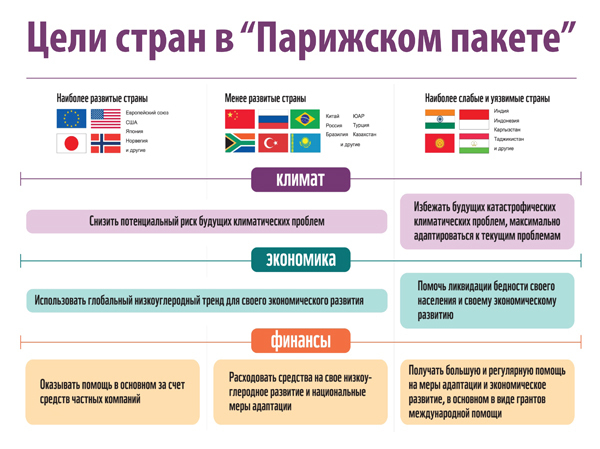

Подробнее по теме:
Выгодно ли России Парижское соглашение?
18 октября 2016 / Политика
18 октября 2016
25 октября в Ассоциации европейского бизнеса пройдет заседание, посвященное конкуренции компаний по углеродному следу и механизмам внедрения стоимости выбросов парниковых газов. В интервью порталу «Климат России» глава рабочей группы по климатической политике АЕБ Антон Галенович рассказывает, как изменится мир после вступления в силу Парижского климатического соглашения, какова роль бизнеса в его реализации и что уже делает российское деловое сообщество для того, чтобы сдержать глобальное потепление.
– Парижское соглашение вступит в силу в ноябре 2016-го. К каким последствиям это приведет на глобальном, региональном и локальном уровнях? В чем главные возможности и риски Парижа?
Вступление в силу Парижского соглашения — одно из свидетельств укрепления глобального экономического тренда на низкоуглеродное развитие. Его цель — достижение в обозримом будущем углеродонейтральности, то есть такого состояния, когда образующиеся в результате хозяйственной деятельности выбросы парниковых газов компенсируются целенаправленными сокращениями и увеличением поглощения углекислого газа лесами. Парижское соглашение очерчивает рамки и условия международного взаимодействия государств, субнациональных юрисдикций, общественных организаций и бизнеса в области снижения парниковой эмиссии и технологической модернизации. В этом главный смысл и возможности Парижа.

Сегодня риски перехода к низкоуглеродному развитию для России превратились в нарастающую угрозу ущерба в случае сохранения традиционной экономической парадигмы, основанной на добыче, производстве и продаже сырья.
– Какова роль бизнеса в реализации соглашения?
Решение о принятии Парижского соглашения содержит раздел, посвященный «участникам, не являющимся Сторонами соглашения», которые представляют гражданское общество, частный сектор, финансовые институты, города и другие субнациональные органы власти. Соглашение призывает таких участников «наращивать масштабы усилий и поддержки действий по сокращению выбросов парниковых газов». Кстати, в этом же разделе «установление цены на углерод», то есть внедрение тех или иных механизмов образования стоимости выбросов, признается важнейшим стимулом для бизнеса.
В отличие от Киотского протокола в Парижском соглашении бизнес становится равноправным участником реализации договора, хотя, конечно, и не «стороной соглашения». Форма участия определяется, в первую очередь, статьей 6.3. В ней говорится о том, что «использование передаваемых на международном уровне результатов предотвращения изменения климата для достижения определяемых на национальном уровне вкладов осуществляется на добровольной основе и с разрешения участвующих сторон». Единственное, что ограничивает роль бизнеса, это, к сожалению, «разрешение участвующей стороны». По опыту мы знаем, что участия и разрешения правительства можно ждать долго — и не дождаться.
На очередном открытом заседании, которое состоится 25 октября 2016-го, будет рассмотрен вопрос о том, как в нынешней непростой ситуации продвигать интересы и предложения бизнеса, работающего в России, в контексте статьи шесть Парижского соглашения.
| Table Head 1 | Table Head 2 | Table Head 3 | Table Head 4 |
|---|---|---|---|
| 1 | На очередном открытом заседании, которое состоится 25 октября 2016-го, будет рассмотрен вопрос о том, как в нынешней непростой ситуации продвигать интересы и предложения бизнеса, работающего в России, в контексте статьи шесть Парижского соглашения. | Парижское соглашение | 111.222.033 |
| 1 | На очередном открытом заседании, которое состоится 25 октября 2016-го, будет рассмотрен вопрос о том, как в нынешней непростой ситуации продвигать интересы и предложения бизнеса, работающего в России, в контексте статьи шесть Парижского соглашения. | Парижское соглашение | 111.222.033 |
| foot 1 | foot 2 | foot 3 | foot 4 |
Хотелось бы пожелать инициативности без оглядки на исполнительную власть и расчета, основанного на том, что у парниковых выбросов есть положительная стоимость. Ведь они наносят вред, а значит, их признанное сокращение несет выгоду. И вне зависимости от того, верите вы в глобальное потепление или нет, такое снижение — это бизнес, объект прямых и интересных инвестиций. Приходите на заседание в АЕБ 25 октября!